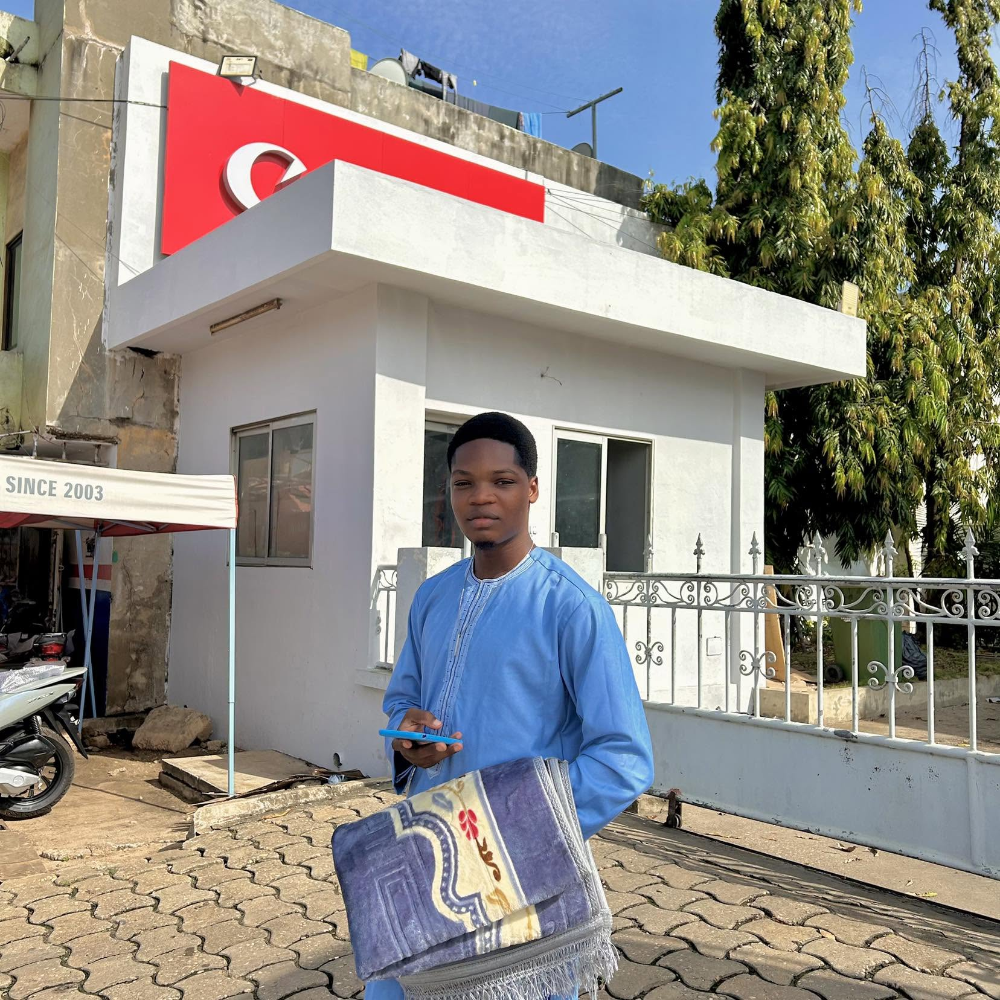

Je suis une personne passionnée par les loisirs et les activités qui me permettent de me détendre.
Parmi mes passions, le basket-ball occupe une place importante dans ma vie.
J'aime jouer avec mes amis et suivre les grands matchs à la télévision.
Le basket m'aide à rester en forme et à développer l'esprit d'équipe.
La musique est également l'une de mes plus grandes passions.
J'écoute différents styles musicaux selon mon humeur et les circonstances.
La musique me permet de me relaxer et de m'évader du stress quotidien.
J'aime aussi découvrir de nouveaux artistes et de nouvelles chansons.
Pendant mon temps libre, j'apprécie regarder des films et des séries.
J'aime également naviguer sur Internet pour apprendre de nouvelles choses.
La lecture fait partie de mes loisirs préférés lorsque je recherche le calme.
J'apprécie aussi passer du temps avec ma famille et mes amis.
Les jeux vidéo constituent une autre activité que je pratique pour me divertir.
Tous ces loisirs contribuent à mon épanouissement personnel et à mon bien-être.
Grâce à eux, je profite pleinement de mon temps libre tout en développant mes centres d'intérêt.